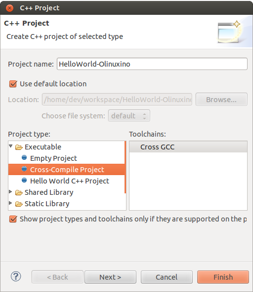
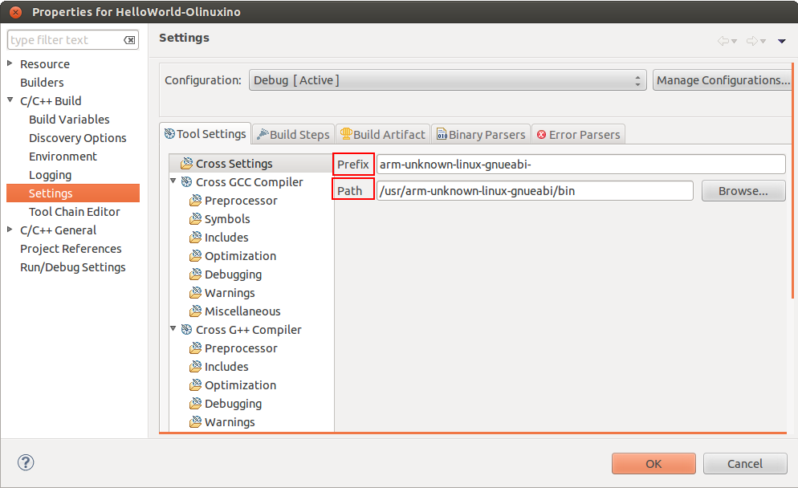
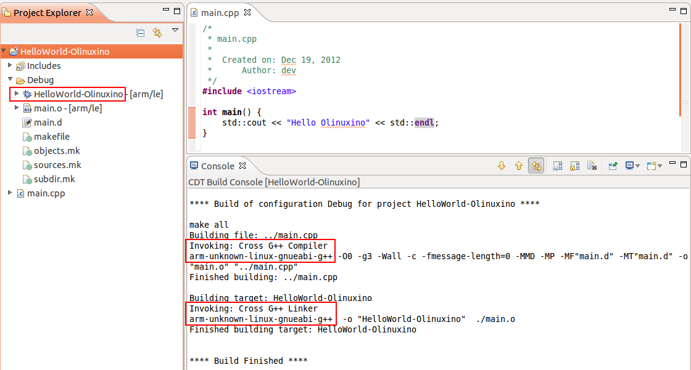
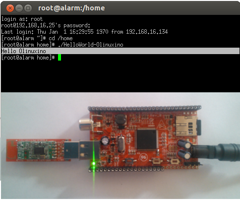

Embedded GUI Framework
Overview
Embedded GUI Framework
Background:
We live in a world surrounded by computers - from our (arguably excessive) coffee machines to our cell phones and cars, microcomputers play an integral role in our everyday lives. With the cost of electronics rapidly decreasing, and touchscreens becoming commonplace even on low cost consumer products, a unique need has arisen for a unified way of creating user interfaces on embedded devices.
Why we need it:
It is easy for small companies and hobbyists to prototype microcontroller based products, such as environmental sensors and other equipment. However, user interface design is generally left at basic pushbuttons and potentiometers, with at most a simple text display on a serial LCD. The barrier to entry into high end touchscreen interfaces is high: it often involves more development/work than the device itself, and there exist few unified solutions for multi-processor and display targeted builds. The few solutions that do exist are prohibitively expensive: For example, a license of Segger EmWin costs $12,300… per target architecture/CPU! The Embedded GUI Framework aims to be a “drop in” interface for embedded developers to rapidly incorporate touchscreens into projects.
How/Technologies:
The Embedded GUI Framework will be built in C to allow use with the vast majority of embedded toolchains in use. All hardware specific code will be isolated into header files, with preprocessor directives to allow targeted builds for different architectures. As a testing platform, TI Stellaris ARM M4 microprocessors will be used, driving a low cost 480 x 272px TFT touchscreen via a 24 bit parallel interface (the most common interface for LCD drivers).
Features:
- Controls/Widgets
- Pushbutton
- Slider/Fader
- Label/Text control
- Tabs/groups for controls
- Events
- Touchscreen ‘coordinates’
- Button events (‘callback’ / function pointer)
- Encapsulated hardware specific code (to allow easy addition of new architectures/display drivers)
Vital Vio LLC:
Vital Vio is a privately held biomedical and lighting design startup focused on manipulating light to address real world problems by developing innovative methods of delivery. Through precise combination and control of visible light, Vital Vio products utilize light for more than just illumination. Vital Vio units currently focus on the benefits of passive decontamination for human health aspects and environmental safety from microorganisms. This RCOS project will be under the guidance of Vital Vio, and supported in part (office space, some additional benefits) by Vital Vio LLC. The scope of the Embedded GUI Framework does not include any Vital Vio specific features, and is useful to a variety of other applications involving touchscreen interfaces. Vital Vio’s involvement in the project offers a unique and valuable opportunity for an open source project from RCOS to be immediately incorporated into a production product.
Hardware
A13-OLinuXino-MICRO

Features
- A13 Cortex A8 processor at 1GHz, 3D Mali400 GPU
- 256 MB RAM (128Mbit x 16)
- 5VDC input power supply with own ICs, noise immune design
- 1 USB host
- 1 USB OTG which can power the board
- SD-card connector for booting the Linux image
- VGA video output
- LCD signals available on connector so you still can use LCD if you diasble VGA/HDMI
- Audio output
- Microphone input pads (no connector)
- 1 User key
- 4 Mount holes
- UEXT connectorfor connecting addtional UEXT modules like Zigbee, Bluetooth, Relays, etc
- GPIO connector with 68/74 pins and these signals:
- 17 for adding NAND flash;
- 22 for connecting LCDs;
- 20+4 including 8 GPIOs which can be input, output, interrupt sources;
- 3x I2C;
- 2x UARTs;
- SDIO2 for connectinf SDcards and modules;
- 5 system pins: +5V, +3.3V, GND, RESET, NMI
- Dimensions: 100 x 85 mm (3.950x3.350'')
- Optional low-cost 7" LCD with touchscreen
FAQ
- There is only 1 USB host on the board, how can I connect simultaneously my USB mouse and USB keyboard?
- You should use external USB hub.
- What software is available for the board?
- The software development changes very rapidly. So far we have reports for number of Linux distributions working properly with the MICRO, please visit the WIKI and the GitHub pages of A13-OLinuXino-MICRO to find suitable distributions;additionally you might want to check on the forum for additional help
- I bought A13-LCD7-TS but when I connect it to the A13-OLinuXino-MICRO I receive no image on the display. What do I do wrong?
- The default A13-OLinuXino-MICRO image is set for a VGA display and resolution. To use LCD with A13-OLinuXino-MICRO you need to upload new image with the appropriate settings.
- The download links for the images may be found in the wiki article for A13-OLinuXino.
- What is the operating temperature range of A13-OLinuXino?
- The board works in the commercial temeprature range 0+70C
- Where can I find the Android image for the A13-OLinuXino-MICRO?
- At the moment we haven't tested Android booting from SD card. Android from SD card is currently not officially supported. However note that there are people reporting success getting it to run - head to the Olimex forums for more recent info.
Wireless Dongle
Links
General
- https://github.com/OLIMEX/OLINUXINO
- https://www.olimex.com/Products/OLinuXino/A13/A13-OLinuXino-MICRO/
- http://linux-sunxi.org/Main_Page - for discussion and community support
- https://www.olimex.com/forum/ - for OLinuXino development discussions
Research Articles
A13
Programming for A13 in Debian {Source}
- Programming for A13 in debian
- There are 2 main methods to create programs for your A13 board.
- Cross compiling
- Setting up a tool chain to compile on another system, which is typically faster and easier to manage.
- Programming on board
- installing a compiler to compile directly on the board
- The sections below contain instructions for these 2 methods
- There are 2 main methods to create programs for your A13 board.
- Cross Compiling
- Cross compiling is usually performed on another linux machine, it seems the most common for doing this is ubuntu.
- If you have compiled the kernel and setup the SD card you will already have most of the tool chain setup on your machine
- Setting up the tool chain
- The following instructions are to be performed on a linux machine which is not the A13 board.
- Complete the following steps to setup the tool chain.
- These instructions have been tested on ubuntu only however they may work for other distributions.
- Instructions
- Install eclipse
- Eclipse is a GUI which enables easy compilation and debugging when the appropriate tools have been installed.
- This may be able to be installed using the package manager on your linux system.
- Manual eclipes install
- To manually install the most up to date eclipse perform the following:
- Go to the eclipse download section
- Eclipse download Download to your linux machine the suitable eclipse version.
- Decompress the downloaded file into any directory you like by moving the downloaded file to your desired directory. Open a terminal, go to the directory and decompress with the command
tar -xzvf FILENAME.
- This will create a directory in this location called eclipse Within this directory is the executable eclipse.exe
- It is recommended to create a launcher on your desktop which points to this executable file to make it easier to start.
- To manually install the most up to date eclipse perform the following:
- Manual Java runtime install
- As eclipse is written in java the jave runtime is required as well.
- Download the java runtime.
- Java download page Download the java RPM file that your eclipse version requires.
- Follow the instructions on the java download page beside the download to install
- Your eclipse installation should now start up.
- Install the tool chain
- The instructions contained in this wiki were originally sourced from this page Debugging on embedded using opensource tools
- To compile code for the A13 the ArmV5 tool chain is required.
- Change to super user
# sudo su
- Install compilers, libs and make # apt-get install gcc g++ make libncurses5-dev
- Open the repository file "/etc/apt/sources.list"
- Add the following line
deb http://www.emdebian.org/debian/ squeeze main
- update the repository info
# apt-get update
- install some packages
# apt-get install linux-libc-dev-armel-cross # apt-get install libc6-armel-cross # apt-get install libc6-dev-armel-cross # apt-get install binutils-arm-linux-gnueabi # apt-get install gcc-4.4-arm-linux-gnueabi # apt-get install g++-4.4-arm-linux-gnueabi # apt-get install uboot-mkimage
- The tool chain should now be installed
- Creating a hello world program using eclipse
- Follow this tutorial to create a hello world program Debugging on embedded using opensource tools
- Install eclipse
- Some issues found for some users:
- Issue : After having installed eclipse and the toolchain the path and prefix for the compiler as listed in the example could not be found.
- Solution : Look for the same prefix in a different path, /usr/bin is likely to hold the files.
- Issue : Having built the program and copied it to the A13 board it will not run resulting in "permission denied"
- Solution: Check the permissions for the file are set to allow execution by typing #ls -l . if you dont see a lot of x's (3) in the first column its likely your cause. To change the permissions type #chmod ugo+x FileName
- Issue : executing the file returns "command not found"
- Solution: A library file can not be found this is either /lib/ld-linux.so.3 or /lib/ld-linux-armhf.so.3 . To find the specific one your file is looking for open the executable in a text editor on the first line or 2 you will find the file name its looking for ld-linux.so.3 .
- Issue : After having installed eclipse and the toolchain the path and prefix for the compiler as listed in the example could not be found.
- Programming on the A13 board
- Below is a way to create a hello world program on your A13 olinuxino board in a suitable folder create your code file by typing
nano hello.c
- type the following into the program
#include <stdio.h> main () { printf("hello world\n"); } save by pressing ctrl o exit by pressing ctrl x
- compile the program in the command line by typing
gcc -o hello hello.c
OR
gcc-4.6 -o hello hello.c
- make the file executable by typing
chmod z+x hello
- execute the binary file
./hello
- this should print out hello world
- if it has this means you have created a program on your A13 olinuxino board
- Below is a way to create a hello world program on your A13 olinuxino board in a suitable folder create your code file by typing
Debugging on embedded using opensource tools (part 1) {source}
- Overview
- written by brakova on Dec 19 2012 1:39 PM
- Just a few days ago we got a great surprise from Olimex - the new Olinuxino A13! After setting up the SD card, installing Debian and trying the Agilart platform works on it we wanted to set up the developing environment in order to make it easy to cross compile and cross debug C/C++ code that would run on the microcontroller from the host machine.
- So here is how we worked our way through this and managed to get cross compiling and cross debugging working with the standart GCC and GDB on the Olinuxino Micro board. The same set of steps would work for other microcontrollers too, you just need to have the right toolchain.
- First make sure that you have installed the Eclipse CDT plugin. You cal also install the whole Eclipse IDE for C/C++ Developers. Then you need the appropriate arm toolchain against which you can cross compile your code. In order to generate programs that can run and be debugged on the Olinuxino, we need to install the appropriate compiler and debugger and set up the project in Eclipse.
- Setting up your toolchain for cross compilation
- You don't need ARM based host to develop software for Olinuxino. You can do everything with Ubuntu and a proper cross compiler. To produce code that will run on the Olinuxino you need a toolchain with ARMv5 support. Because Ubuntu has default toolchain arm-linux-gnueabi for ARMv7arm, solution is to get proper toolchain from Debian repositories.
sudo apt-get install gcc g++ make libncurses5-dev
- Add the following line to /etc/apt/sources.list
deb http://www.emdebian.org/debian/ squeeze main
- Install the following packages:
sudo apt-get install linux-libc-dev-armel-cross sudo apt-get install libc6-armel-cross sudo apt-get install libc6-dev-armel-cross sudo apt-get install binutils-arm-linux-gnueabi sudo apt-get install gcc-4.4-arm-linux-gnueabi sudo apt-get install g++-4.4-arm-linux-gnueabi sudo apt-get install uboot-mkimage
- Set up a GCC Cross compiler project in Eclipse
- Open Eclipse and click on File >> New >> C++ Project
- In the Project Type section select the Cross-compile Project. This is how eclipse will know that we don't want to use the standart gcc but another tooolchain(arm-unknown-linux-gnueabi-gcc).
- When you create the project add a simple main.cpp source file.
- Here we'll do the 'Hello World' in this case 'Hello Olinuxino' project.
- Then go to the project's Settings page and check the cross compiler configuration settings. Have a look at the Path and the Prefix options: 
- Then we are ready to build the project. In the console check that Eclipse is using the right gcc toolchain. In this case it should be 'arm-unknown-linux-gnueabi-g++'. If it doesn't work for some reason check that the toolchain is installed correctly by building the preject by manually from the terminal. If for some reason you have problems with the toolchain you can download build it yourself by following this guide from the Archlinux community.
- 
- Get the executable on the Olinuxino. An easy way to do this is usinf sshfs:
sshfs root@olinuxino-hostname:/ ~/olinuxino
- It will ask you for the password - remember that the default one is root. Here we use Olinuxino Micro, but any arm-based microcontroller would be the same. You just need the right toolchain. for Raspberry Pi you even need the exact same toolchain.
- 
- The next part would cover what are the steps you need to do in order to coss debug from your GCC Exclipse project on the Olinuxino Micro.
- Cheers!
- Open Eclipse and click on File >> New >> C++ Project
Building bootable SD-card with Debian Linux Image for A13-OLinuXino
- Info
Title Building bootable SD-card with Debian Linux Image for A13-OLinuXino Author Date Oct 12 2012 License URL http://olimex.wordpress.com/2012/10/12/building-bootable-sd-card-with-debian-linux-image-for-a13-olinuxino/ Accessed 2013-06-07
- Article
- Overview
- We ship A13-OLinuXino-WIFI with pre-loaded Android 4.0.3 image on the NAND flash, so it runs out of the box and you can have access to all millions of applications of Google Play.
- For those who want to use and develop on this board with Linux I will explain step by step what they should do to make their own SD-card image which to boot Debian on A13-OLinuXino. Big thanks to Dimitar Gamishev who handheld guided me yesterday through the whole build process so I can share now with you :)
- We assume you have computer with Linux, sorry guys but compiling Linux Kernel on Windows is impossible, so if you come from Windows world, don’t be afraid, you can download and install Ubuntu to your computer on top of Windows so you will have dual OS computer and can use Windows or Linux depend on your preferences.
- 1. Setup of the toolchain
- You should make sure you have the tools for building the Linux Kernel and install them if you don’t have them. To install new software you should be with super user rights so do this to make sure you are:
sudo su
- you will be asked for your password and then your prompt will change to # which means now you are super user, all next commands should be run in this mode
apt-get install gcc-4.6-arm-linux-gnueabi ncurses-dev uboot-mkimage build-essential git
- you will be asked for your password and then your prompt will change to # which means now you are super user, all next commands should be run in this mode
- with this line you make sure you have all tools necessary for the A13 kernel and uboot build: GCC compiler, the kernel config menu, uboot make image, git and other tools for building the kernel
- after the installation you now have all tools to make your very own A13 kernel image
- You should make sure you have the tools for building the Linux Kernel and install them if you don’t have them. To install new software you should be with super user rights so do this to make sure you are:
- 2. Building Uboot
- Allwinner community uboot is maintained by Henrik Nordström aka hno on #freenode irc channel.
- First let’s make the directory where we will build the A13-OLinuXino Linux:
mkdir olinuxino; cd olinuxino - then let’s download the uboot sources from GitHub repository, note there are lot of branches but you have to use sunxi branch, the files are about 70 MB
git clone -b sunxi https://github.com/linux-sunxi/u-boot-sunxi.git
- after the download you should have new directory
cd uboot-allwinner/ - and with this command you can start the uboot build:
make a13_olinuxino CROSS_COMPILE=arm-linux-gnueabi-- as you can see A13-OLinuXino already have support configuration in Allwinner community uboot
- at the end of the process you can check if everything is OK by
ls u-boot.bin spl/sunxi-spl.bin
- if you got these two files everything is complete, well done so far :)
- 3. Building the Kernel
- The Allwinner community Kernel is maintained by Alejandro Mery aka mnemoc on #freenode irc channel.
- Let’s first go back from uboot directory
cd .. - then download the Kernel sources, you should use allwinner-v3.0-android-v2 branch, the sources are about 700 MB so you will have to wait a bit longer with this download:
git clone https://github.com/linux-sunxi/linux-sunxi.git
- after the download go to the kernel directory
cd linux-allwinner/- and compile the a13_configuration:
make ARCH=arm a13_defconfig- as you see A13-OLinuXino have pre-made configuration in the community kernel sources
make ARCH=arm menuconfig- with this command you add/remove different modules for the different peripherials in the kernel, be careful when use this as this may make the kernel not working
- the menuconfig created .config text file, which you can view/edit even with text editor like vi
- if you want to use GPIOs for instance they are not enabled by default and you can do this by adding:
SUN4I_GPIO_UGLY = y inside .config
- as you see A13-OLinuXino have pre-made configuration in the community kernel sources
- then you can contiue with:
make ARCH=arm CROSS_COMPILE=arm-linux-gnueabi- uImage
- and compile the a13_configuration:
- when this finish you will have uImage ready and you can build the kernel modules:
make ARCH=arm CROSS_COMPILE=arm-linux-gnueabi- INSTALL_MOD_PATH=out modules make ARCH=arm CROSS_COMPILE=arm-linux-gnueabi- INSTALL_MOD_PATH=out modules_install
- DONE! At this point you have uboot and kernel builds ready.
- 4. Make the SD-card
- First we have to make the correct card partitions, this is done with fdisk.
- Plug SD card on your SD card reader and do
ls /dev/sd
- then press two times <TAB> you will see list of your sd devices like sda sdb sdc note that some of these devices may be your hard disk so make sure you know which one is your sd card before proceed as you can damage your HDD if you choose wrong sd-device :) once you know which device is your sdcard like sda use it instead the sdX name in the references below:
fdisk -u=sectors /dev/sdX
- then do these steps:
- p
- will list your partitions
- if there are already partitions on your card do:
- d 1
- to delete them all
- n p 1
- create first partition, starting from 2048 and ending to 34815
- beginning 2048 end 34815
- create second partition
- n p 2 enter enter
- then list the created partitions:
- p
- if you did everything correctly you should see something like:
Disk /dev/sdX: 2001 MB, 2001731584 bytes 42 heads, 41 sectors/track, 2270 cylinders, total 3909632 sectors Units = sectors of 1 * 512 = 512 bytes Sector size (logical/physical): 512 bytes / 512 bytes I/O size (minimum/optimal): 512 bytes / 512 bytes Disk identifier: 0×00000000 Device Boot Start End Blocks Id System /dev/sdX1 2048 34815 16384 83 Linux /dev/sdX2 34816 3909631 1937408 83 Linux then write the partititons to the card
- if you did everything correctly you should see something like:
- w
- p
- now we have to prepare the file system on the card:
- the first partition should be vfat as this is FS which Allwinner bootloader understands
mkfs.vfat /dev/sdX1
- the second should be normal Linux EXT3 FS
mkfs.ext3 /dev/sdX2
- the first partition should be vfat as this is FS which Allwinner bootloader understands
- 5. Debian rootfs
- Linux Kernel and Uboot are ready, now we have the Linux distribution rootfs, how to build one is long topic, the good thing is that there are many already pre-built so we can just download one and use.
- exit the kernel directory
cd .. - download debian rootfs:
wget http://hands.com/~lkcl/mele_debian_armhf_minimal.cpio.gz
- mount your sd card EXT3 FS partition:
mount /dev/sdX2 /mnt cd /mnt/ - and unarchive the rootfs
gunzip -c /home/user/olinuxino/mele_debian_armhf_minimal.cpio.gz | cpio -i cd .. sync umount /mnt - at this point you have Debian on your SD card second partition
- 6. Write Uboot and Kernel you build
- mount
mount /dev/sdX1 /mnt/
- copy the Kernel uImage to root directory in partition 1
cp linux-allwinner/arch/arm/boot/uImage /mnt/
- download script.bin from: https://github.com/OLIMEX/OLINUXINO/blob/master/SOFTWARE/A13/script.bin
- and copy in same directory with uImage
- script.bin is text file with very important configuration parameters like port GPIO assignments, DDR memory parameters, Video resolution etc, by changing these parameters in the script.bin you can configure your Linux without need to re-compile your kernel again and again this is smart way Allwinner provide for tweaking A13 Linux Kernel
- write the Uboot
cd uboot-allwinner/ dd if=spl/sunxi-spl.bin of=/dev/sdX bs=1024 seek=8 dd if=u-boot.bin of=/dev/sdX bs=1024 seek=32 sync umount /mnt
- and copy the Kernel modules for partition 2
mount /dev/sdX2 /mnt cd .. cp -a linux-allwinner/out/lib/modules/3.0.42+/ /mnt/lib/modules/. umount /mnt - that’s all folks! now you have SD card ready to boot debian on A13-OLinuXino.
- Connect USB-SERIAL-CABLE-F to UEXT Tx.Rx and GND, put the SD-card in A13-OLinuXino(-WIFI) and apply power supply, you should see Uboot and then Kernel messages on the console
- default username/password is : root / password
- Have fun!
- mount
- EDIT: 15/10/2012 Linux-Sunxi git repository is moved so you have to use now:
git remote rm origin git remote add origin git://github.com/linux-sunxi/linux-sunxi.git git checkout -b sunxi-3.0 origin/sunxi-3.0
joaoassuncao says: October 12, 2012 at 2:13 pm
First of all, let me thank you for providing this tutorial. I think a step might be missing. When I try to compile the modules, it fails while compiling the mali drivers. In the image I built before I made the following symlinks: cd drivers/gpu/mali/ump ln -s arch-ca8-virtex820-m400-1 arch cd linux ln ../arch arch cd ../../mali ln -s arch-ca8-virtex820-m400-1 arch cd linux ln ../arch arch
I don’t know if it’s the proper mali core but the video works Reply Henrik Nordströmordstrom says: October 12, 2012 at 6:56 pm
You don’t need MALI for framebuffer output. Mali is the 3D accelerator and a) There is no free driver for it. b) It eats quite a lot of your memory if enabled. Reply John says: October 13, 2012 at 9:25 am
root@john-HP-G62-Notebook-PC:/olinuxino# cd uboot-allwinner/ root@john-HP-G62-Notebook-PC:/olinuxino/uboot-allwinner# make a13_olinuxino CROSS_COMPILE=arm-linux-gnueabi- Configuring for a13_olinuxino – Board: sun5i, Options: SPL make /bin/bash: arm-linux-gnueabi-gcc: command not found /bin/bash: arm-linux-gnueabi-gcc: command not found dirname: missing operand Try `dirname –help’ for more information. make1: Entering directory `/olinuxino/uboot-allwinner’ Generating include/autoconf.mk /bin/bash: line 3: arm-linux-gnueabi-gcc: command not found Generating include/autoconf.mk.dep /bin/bash: line 3: arm-linux-gnueabi-gcc: command not found make1: Leaving directory `/olinuxino/uboot-allwinner’ /bin/bash: arm-linux-gnueabi-gcc: command not found /bin/bash: arm-linux-gnueabi-gcc: command not found dirname: missing operand Try `dirname –help’ for more information. make1: Entering directory `/olinuxino/uboot-allwinner’ /bin/bash: arm-linux-gnueabi-gcc: command not found arm-linux-gnueabi-gcc -DDO_DEPS_ONLY \ -g -Os -fno-common -ffixed-r8 -msoft-float -D__KERNEL__ -I/olinuxino/uboot-allwinner/include -fno-builtin -ffreestanding -nostdinc -isystem -pipe -DCONFIG_ARM -D__ARM__ -march=armv5 -Wall -Wstrict-prototypes \ -o lib/asm-offsets.s lib/asm-offsets.c -c -S /bin/bash: arm-linux-gnueabi-gcc: command not found make1: *** [lib/asm-offsets.s] Error 127 make1: Leaving directory `/olinuxino/uboot-allwinner’ make: *** [a13_olinuxino] Error 2 root@john-HP-G62-Notebook-PC:/olinuxino/uboot-allwinner#
ANY IDEAS???????? Reply OLIMEX Ltd says: October 13, 2012 at 9:44 am
you have no installed compiler or it’s not on the proper path? did you read/try this https://www.olimex.com/forum/index.php?topic=152.0 ? Reply John says: October 13, 2012 at 10:07 am
thank you it seems tha tis started compiling for several minutes but now im getting this:
/home/john/olinuxino/uboot-allwinner/include/asm/spl.h:27:26: fatal error: asm/arch/spl.h: No such file or directory compilation terminated. make2: *** No rule to make target `/home/john/olinuxino/uboot-allwinner/spl/arch/arm/cpu/armv7/sunxi/.depend’, needed by `all’. Stop. make2: Leaving directory `/home/john/olinuxino/uboot-allwinner/arch/arm/cpu/armv7/sunxi’ make3: *** [/home/john/olinuxino/uboot-allwinner/spl/arch/arm/cpu/armv7/sunxi/libsunxi.o] Error 2 make3: Leaving directory `/home/john/olinuxino/uboot-allwinner/spl’ make1: *** [spl/u-boot-spl.bin] Error 2 make1: Leaving directory `/home/john/olinuxino/uboot-allwinner’ make: *** [a13_olinuxino] Error 2 root@john-HP-G62-Notebook-PC:/home/john/olinuxino/uboot-allwinner#
sorry for the unexperience :/ Reply John says: October 13, 2012 at 10:23 am
u-boot.bin is created the other file no Reply 6oko says: October 13, 2012 at 2:06 pm
same here: /home/bat6oko/olinuxino/uboot-allwinner/spl/arch/arm/cpu/armv7/sunxi/board.o board.c -c In file included from /home/bat6oko/olinuxino/uboot-allwinner/include/spl.h:28:0, from board.c:41: /home/bat6oko/olinuxino/uboot-allwinner/include/asm/spl.h:27:26: fatal error: asm/arch/spl.h: No such file or directory compilation terminated. make2: *** [/home/bat6oko/olinuxino/uboot-allwinner/spl/arch/arm/cpu/armv7/sunxi/board.o] Error 1 make2: Leaving directory `/home/bat6oko/olinuxino/uboot-allwinner/arch/arm/cpu/armv7/sunxi’ make3: *** [/home/bat6oko/olinuxino/uboot-allwinner/spl/arch/arm/cpu/armv7/sunxi/libsunxi.o] Error 2 make3: Leaving directory `/home/bat6oko/olinuxino/uboot-allwinner/spl’ make1: *** [spl/u-boot-spl.bin] Error 2 make1: Leaving directory `/home/bat6oko/olinuxino/uboot-allwinner’ make: *** [a13_olinuxino] Error 2 Reply Henrik Nordströmordstrom says: October 13, 2012 at 5:55 pm
Please try again. u-boot is undergoing rapid changes at the moment, aiming for a stable release on monday/tuesday. 6oko says: October 14, 2012 at 10:34 am
fixed Henrik Nordströmordstrom says: October 14, 2012 at 12:26 pm
Kernel repository have moved. Please use
git clone https://github.com/linux-sunxi/linux-sunxi.git
to get the kernel sources, and use linux-sunxi instead of linux-allwinner. Reply John says: October 22, 2012 at 3:12 pm
Dear community i have been trying to boot but still no progress, or i should say a little progress. i finished the whole tutorial succesfull and i wrote my card. now i try to boot and i see the following… any idea? When i see the kernel message it stops there or it restarts by the whatchdog
U-Boot SPL 2012.10-04495-g4b95763 (Oct 20 2012 – 12:56:18) SUNXI SD/MMC: 0
U-Boot 2012.10-04495-g4b95763 (Oct 20 2012 – 12:56:18) Allwinner Technology
CPU: SUNXI Family Board: A13-OLinuXino I2C: ready DRAM: 512 MiB MMC: SUNXI SD/MMC: 0 *** Warning – bad CRC, using default environment
In: serial Out: serial Err: serial Hit any key to stop autoboot: 0 reading uEnv.txt
** Unable to read “uEnv.txt” from mmc 0:1 ** Loading file “uEnv.txt” from mmc device 0:1 Failed to mount ext2 filesystem… ** Bad ext2 partition or disk – mmc 0:1 ** ext2load – load binary file from a Ext2 filesystem
Usage: ext2load [addr] [filename] [bytes] – load binary file ‘filename’ from ‘dev’ on ‘interface’ to address ‘addr’ from ext2 filesystem Loading file “boot/uEnv.txt” from mmc device 0:1 Failed to mount ext2 filesystem… ** Bad ext2 partition or disk – mmc 0:1 ** ext2load – load binary file from a Ext2 filesystem
Usage: ext2load [addr] [filename] [bytes] – load binary file ‘filename’ from ‘dev’ on ‘interface’ to address ‘addr’ from ext2 filesystem reading boot.scr
** Unable to read “boot.scr” from mmc 0:1 ** Loading file “boot.scr” from mmc device 0:1 Failed to mount ext2 filesystem… ** Bad ext2 partition or disk – mmc 0:1 ** ext2load – load binary file from a Ext2 filesystem
Usage: ext2load [addr] [filename] [bytes] – load binary file ‘filename’ from ‘dev’ on ‘interface’ to address ‘addr’ from ext2 filesystem Loading file “boot/boot.scr” from mmc device 0:1 Failed to mount ext2 filesystem… ** Bad ext2 partition or disk – mmc 0:1 ** ext2load – load binary file from a Ext2 filesystem
Usage: ext2load [addr] [filename] [bytes] – load binary file ‘filename’ from ‘dev’ on ‘interface’ to address ‘addr’ from ext2 filesystem reading script.bin
26604 bytes read reading uImage
3834368 bytes read ## Booting kernel from Legacy Image at 48000000 … Image Name: Linux-3.0.42+ Image Type: ARM Linux Kernel Image (uncompressed) Data Size: 3834304 Bytes = 3.7 MiB Load Address: 40008000 Entry Point: 40008000 Verifying Checksum … OK Loading Kernel Image … OK OK
Starting kernel … Reply OLIMEX Ltd says: October 22, 2012 at 4:17 pm
I do not see this message at boot: “*** Warning – bad CRC, using default environment” so I guess your card is not good, please re-do on new card and try again Reply Henrik Nordström says: October 23, 2012 at 11:04 pm
“Warning – bad CRC, using default environment” is expected and a good sign. You should be worried if you DON’T get that message.
You want to use the default u-boot environment. Crenshinibon says: October 23, 2012 at 11:22 am
Hi John,
i get the same message: “Warning – bad CRC …”. Did it help you to use a different sd card? I have no card right here so I cannot check it. By the way I have a Platinum 8GB card. Which card (manufacturer and size) is recommended?
Best regards Dirk Reply John says: October 24, 2012 at 8:27 pm
no same with new card, its not working TranceTrouble says: October 23, 2012 at 4:43 pm
having the warning as well on two cards but debian runs fine. make sure you have a correct .config file the make a13_defconfig is messing up my old config. i used the config mentioned in: https://www.olimex.com/forum/index.php?topic=152.msg682#msg682 then compiled the uImage and it worked fine. Reply Crenshinibon says: October 24, 2012 at 3:06 pm
I tried the mentioned .config. Now The message “Starting kernel …” stays for a while around 10 seconds and then the boot procedure starts again at the beginning. Look:
U-Boot SPL 2012.10-04252-g7086c98 (Oct 23 2012 – 07:46:28) SUNXI SD/MMC: 0
U-Boot 2012.10-04252-g7086c98 (Oct 23 2012 – 07:46:28) Allwinner Technology
CPU: SUNXI Family Board: A13-OLinuXino I2C: ready DRAM: 512 MiB MMC: SUNXI SD/MMC: 0 *** Warning – bad CRC, using default environment
In: serial Out: serial Err: serial Hit any key to stop autoboot: 3 … 2 … 1 … 0 reading uEnv.txt
** Unable to read “uEnv.txt” from mmc 0:1 ** Loading file “uEnv.txt” from mmc device 0:1 Failed to mount ext2 filesystem… ** Bad ext2 partition or disk – mmc 0:1 ** ext2load – load binary file from a Ext2 filesystem
Usage: ext2load [addr] [filename] [bytes] – load binary file ‘filename’ from ‘dev’ on ‘interface’ to address ‘addr’ from ext2 filesystem Loading file “boot/uEnv.txt” from mmc device 0:1 Failed to mount ext2 filesystem… ** Bad ext2 partition or disk – mmc 0:1 ** ext2load – load binary file from a Ext2 filesystem
Usage: ext2load [addr] [filename] [bytes] – load binary file ‘filename’ from ‘dev’ on ‘interface’ to address ‘addr’ from ext2 filesystem reading boot.scr
** Unable to read “boot.scr” from mmc 0:1 ** Loading file “boot.scr” from mmc device 0:1 Failed to mount ext2 filesystem… ** Bad ext2 partition or disk – mmc 0:1 ** ext2load – load binary file from a Ext2 filesystem
Usage: ext2load [addr] [filename] [bytes] – load binary file ‘filename’ from ‘dev’ on ‘interface’ to address ‘addr’ from ext2 filesystem Loading file “boot/boot.scr” from mmc device 0:1 Failed to mount ext2 filesystem… ** Bad ext2 partition or disk – mmc 0:1 ** ext2load – load binary file from a Ext2 filesystem
Usage: ext2load [addr] [filename] [bytes] – load binary file ‘filename’ from ‘dev’ on ‘interface’ to address ‘addr’ from ext2 filesystem reading script.bin
30410 bytes read reading uImage
3689604 bytes read ## Booting kernel from Legacy Image at 48000000 … Image Name: Linux-3.0.42+ Image Type: ARM Linux Kernel Image (uncompressed) Data Size: 3689540 Bytes = 3.5 MiB Load Address: 40008000 Entry Point: 40008000 Verifying Checksum … OK Loading Kernel Image … OK OK
Starting kernel …
U-Boot SPL 2012.10-04252-g7086c98 (Oct 23 2012 – 07:46:28) SUNXI SD/MMC: 0
U-Boot 2012.10-04252-g7086c98 (Oct 23 2012 – 07:46:28) Allwinner Technology
…
Any other suggestions? Maybe it is truly a problem with the SD card. kiril says: October 23, 2012 at 3:38 pm
Why are you using this version of Cross Compiler? It is not a stable version. I Think that 4.4 is appropriate I have probolems with package dependances with 4.6. Which repository did you use? What is the version of your debian distribution? Reply John says: October 24, 2012 at 8:33 pm
i used 4.6 because of the tutorials i saw. mele is the debian i use amd the repositories exactly as this tutorial uses Reply A13-OLinuXino playing with GPIOs « olimex says: October 23, 2012 at 4:35 pm
[…] setup for you, if not you can follow the instructions of this post and make one SD card yourself: http://olimex.wordpress.com/2012/10/12/building-bootable-sd-card-with-debian-linux-image-for-a13-oli… do not forget when compile the kernel to enable SUN4I_GPIO_UGLY = y inside .config , why UGLY? […] Reply lorenzo says: October 25, 2012 at 12:39 am
Check your script.bin file.. I made a wget of https://github.com/OLIMEX/OLINUXINO/blob/master/SOFTWARE/A13/script.bin and what I got was an html file.. You have to download the file from a browser.. With a wrong script.bin I had the same problem.. Hope this can help you! Reply John says: October 26, 2012 at 9:14 am
@lorenzo Thank you very much, the script.bin has to be downloaded from UI. On wget is an html file. Everything worked fine with the script.bin and the gcc 4.4 compiler! Reply Crenshinibon says: October 28, 2012 at 11:28 am
I tried 4.4 cross-compiler and a different SD card. Updated everything and started over again, following the guide by word. Still no luck. It hangs on “Starting Kernel …”
Anything I can try? I have a Olinuxino A13 Rev. B with a strange wire going from RM18 to the left most VGA pin … Reply Crenshinibon says: October 28, 2012 at 12:17 pm
Some more infos: I used the real script.bin. I checked out the whole OLINUXINO repository from github to get it (no simple accessible UI on my Linux machine). The SD slot, of the board is a little broken (the top side is somewhat loose on the right) But since U-Boot starts from the card it still should work, right? lorenzo says: October 28, 2012 at 1:26 pm
@Cremahinibon don’t worry about the wire, it fixes a hardware bug. Did you use the kernel config file from this thread?: https://www.olimex.com/forum/index.php?topic=152.msg682#msg682 You can substitute the a13_defconfig file with the one you download and then follow the instruction above.. I compiled all with 4.6 version and it works correctly. If u-boot starts from the card it should be only a kernel issue.. kiril says: October 28, 2012 at 9:15 pm
I compiled everithing with gcc 4.4 on debian 6.0 with no errors but I can’t boot at all. I think that the problem is that I don’t know what the proper way to make the sd card bootable is. I made the two partitions without a mistake and I followed the tutorial but nothing happened. I set the boot flag to the first partition and tried to make it fat type not linux but nothing happened again. I connected the A13 olinuxino to standard vga TFT SyncMaster 723n monitor but when I tried to boot from the sd card the Monitor was in sleep mode. Reply Alistair says: October 31, 2012 at 2:32 pm
Hi, A quick new-user question: what settings should i use on my serial terminal emulator when connecting to the board via RS-232? Thanks, Alistair. Reply skaag says: November 4, 2012 at 9:42 am
I read somewhere in the Wiki that you can use anywhere from 9600 N-8-1 to 57600 N-8-1 and maybe even 115000 (that’s 4 bps, [N]o parity, 5 bit, 1 stop bit). I would probably start with 9600 or 19200 to see that it works. For most terminal work that’s mostly good enough anyway. Reply Mark Van den Borre says: November 13, 2012 at 1:21 am
screen /dev/ttyUSB0 115200,ctsrts
That should get you going Reply skaag says: November 3, 2012 at 6:06 pm
By the way the documentation claims that script.bin is a text file. That is not the case. You can’t just edit this file to modify boot settings. Reply Anton Klava (@AntonKlava) says: November 13, 2012 at 2:29 am
I also got stuck on “Starting kernel …” when I followed this guide. Eventually I got it working though by trying other versions of the kernel, wrote about it here: http://blog.klava.se/post/debian-sd-card-for-olinuxino-a13 Reply Crenshinibon says: November 13, 2012 at 1:47 pm
Hi Anton, your solution: http://blog.klava.se/post/debian-sd-card-for-olinuxino-a13 works. Many thanks … Reply Anton Klava (@AntonKlava) says: November 13, 2012 at 4:10 pm
I’m glad it helped! :) Putting Node.js on the Olinuxino A13 « Shiggy Enterprises says: November 16, 2012 at 12:25 am
[…] arrival and it ran perfectly the integrated Android 4.0. My first impulse: put Linux on it. The guide provided by Olimex didn’t work out well: while booting and recognizing the SD card and u-boot correctly it […] Reply banym says: November 17, 2012 at 9:48 pm
Hi,
thx for the tutorial. I am on Fedora 17 and tried to compile the u-boot. On my Fedora I used the command make a13_olinuxino CROSS_COMPILE=arm-linux-gnu- it starts to compile but throws the following error:
arm-linux-gnu-ld.bfd: cannot find -lgcc make1: *** [u-boot] Error 1 make1: Leaving directory `/home/dominik/Projects/A13-OLinuXino/uboot-allwinner
Maybe I missed something or you know the problem.
Regards,
Dominik Reply banym says: November 17, 2012 at 10:37 pm
Found the problem. The Fedora 17 ARM compiler comes without the necessary libraries to build other tools than the ARM kernel. This will hopefully change with Fedora 18 when ARM support is added to the distribution. Meanwhile I used an Ubuntu server to build the u-boot binary. Reply Anand says: November 20, 2012 at 8:52 pm
I’m new to this but planning to get this board for prototyping a product but need to use Debian with touchscreen. I’m wondering if there is any issued with Debian on this board with a touchscreen.
Thank you Reply David Goadby says: November 23, 2012 at 7:05 pm
I just compiled my first kernel using these notes and others. I have some useful notes to add:
- I used Debian 12.04 running under Virtualbox and there were no problems at all. Some have used other “brands” and versions of Linux with subtle problems. All I can say is Debian 12.04 was solid for this task. Pre-bult Debian virtual machines are available which saves time. If Windows users don’t like the idea (or risk) of creating a dual boot system then Virtualbox runs under Windows too. Just don’t forget to install the compiler. ;-)
- Check this blog before doing anything as it addresses a number of the subtle problems you will come across: http://blog.klava.se/post/debian-sd-card-for-olinuxino-a13
- If you already have a Debian SD card that works then only the new kernel image (uImage) needs to be compiled or copied across.
I am now going to write some shell scripts to automate this as I am inherently lazy and a poor typist… ;) Reply Geovane Gomes says: November 28, 2012 at 9:46 pm
Could be possible to install zRam to increase the performance of the swap memory? Reply Olimex A13-OLinuXino-MICRO Development Board Unboxing And Review says: December 22, 2012 at 5:00 am
[…] build u-boot & the kernel yourself, and use your own rootfs, you can follow the instructions in Building bootable SD-card with Debian Linux Image for A13-OLinuXino. Those are the instructions for A13-OLinuXino, so you may have to adapt the instructions for […] Reply Kosta says: January 7, 2013 at 2:12 pm
I really do not understand FOR WHAT REASON I HAVE TO COMPILE LINUX. Why there is no linux image of any kind for download? So those people that have problems compiling will get working image and save time and nerves? I do not think some Megabytes or Gigabytes are problem for github but there could be torrent if it is. This makes me seek other board/mini pc for my tasks then Olinuxino. I really have having to say that because I’m Bulgarian as the developer/builder/Guru of the Project- but yes I’m going to buy cheaper box for my needs with preinstalled or easy to install Linux. Come on give as the link to you working image – also the price of SD card with bootable Linux i s too high making whole project too expensive. Reply OLIMEX Ltd says: January 7, 2013 at 2:17 pm
this is tutorial for the people who want to learn how things are done for these who want working images – there are SD cards with the pre-built images on our web-shop, also in the WIKI there are links to the images and instructions how to write to the SD card so nothing stops you to have linux board with working image ;) nor you are forced to build Linux, but some ppl are interested to see how things work and this post is for them Reply farraday says: January 18, 2013 at 1:23 am
Hello, These instructions do not work for the MICRO variant of the board. The latest sunxi kernel crashes on boot. Does anyone know where can I get the .conf, script.bin and such ? Thank you very much. Reply farraday says: January 19, 2013 at 3:49 pm
The boards.cfg file of uboot lists: “a13_olinuxino arm armv7 a13_olinuxino allwinner sunxi sun5i:SPL:” When booting with a uboot built from the sunxi branch of https://github.com/hno/uboot-allwinner.git repository, I get :
CPU: SUNXI Family Board: A13-OLinuXino I2C: ready DRAM: 512 MiB
This is clearly wrong. First, the MICRO has 256 M RAM.
When booting with the uboot on the card shipped with the MICRO I get :
CPU: SUNXI Family Board: A13-OlinuXinoM I2C: ready DRAM: 256 MiB
Does anyone know what configuration options to use when building the uboot and the kernel to get it going on the Olinuxino A13 Micro ?
Thank you. Reply farraday says: January 19, 2013 at 6:19 pm
Hello again, Where can we get access to the modifications needed to build a boot-loader and a kernel that work on the Olinuxino Micro ?
Specifically, the include/configs/sunxi-common.h of uboot and whatever modifications are needed for the kernel to recognize the board as having 256M instead of 512M.
If i hack the include/configs/sunxi-common.h file and hardcode 256M in it and shift the base address, it doesn’t work, once the kernel loads, it still reports 512M and has a panic, probably trying to access the non-existent ram. Reply Biniyas V L says: February 15, 2013 at 12:24 pm
Helo
Can any one provide me any type of contact information of Dimitar Gamishev ? It’s very important issue
Regards Biniyas V L Reply OLIMEX Ltd says: February 15, 2013 at 12:38 pm
join #olimex at IRC he is in the channel Reply Boberle says: February 20, 2013 at 3:07 pm
the first link to git hno/uboot/allwinner seems to be corrupted… if someone nows where the files are… Thank you in advance Reply OLIMEX Ltd says: February 20, 2013 at 3:09 pm
soon after this post the project moved to linux-sunxi.org Reply Suhyong Choi says: February 25, 2013 at 11:18 am
Hi, I’m using Olinuxino A13 -WIFI and i’m new at ARM embedded system. Few days ago, I read this post and succeed booting Debian from SD but i’m curious that I can boot Android from SD card (not NAND flash). I know Olinuxino A13 WIFI board comes with Android 4.0 ready to use, but I want to know if there is way to boot android from SD card. I have tried some method to boot android from SD which some people posted on their blog or something(they used their own development board not Olinuxino) but it does not worked. I need help plz! Reply vaishali says: March 2, 2013 at 3:10 pm
hi suhyong choi ,
i also have a13 wifi board with me. and have also tried to make sd card debian image from wiki instruction. can you please tell me what should i do after login : root | pasword : password . i can not see debian runing on my vga screen. i am only getting the following lines in my vga screen after login.
root@debian:~#
do you know what to do after this. i have asked this in forum also but no response yet. Reply Suhyong Choi says: March 7, 2013 at 10:03 am
If you want Debian with graphical interface, you should have to install Xfce4. Check the follow link: http://olimex.wordpress.com/2012/11/23/running-debian-with-xfce4-on-a13-olinuxino/ Reply Gregwar » Debian sur une tablette tactile à 60€ says: March 23, 2013 at 5:46 pm
[…] En farfouillant, je me suis rendu compte que Olimex proposait des cartes de prototypage basées sur le A13, et également des images de Debian capable de tourner dessus ainsi qu’un tutoriel pour la builder. […] Reply Pasquale Giampa says: April 10, 2013 at 1:37 pm
If you have compilation problem under Ubuntu 12.04 LTS do this: $ sudo su Reply Anil Kumar says: May 3, 2013 at 4:57 am
hi Suhyong Choi
1:-why the size of the first partition of the sd card is made 16MB. 2:- Can i made the size of the first partition less or more than 16MB. please reply soon. i’m waiting for your reply. thankyou Reply
Leave a Reply Blog at WordPress.com. | Theme: Chunk by Automattic. Follow Follow “olimex”
Get every new post delivered to your Inbox.
Join 227 other followers
Powered by WordPress.com
- Overview
Build Bootable SD Card with Debian
- Info
Title Author Date License URL https://www.olimex.com/wiki/Build_Bootable_SD_Card_with_Debian Accessed
- Article
- Overview
- The A13-OLinuXino-WIFI board ships with pre-loaded Android 4.0.3 image on the NAND flash, so it runs out of the box and you can have access to millions of applications on Google Play.
- There are also prebuilt SD card images that will boot to debian, they are linked to on the main A13 wiki page. These are suitable for anyone that doesn't want special kernel options.
- For those who want to use and develop on this board with Linux and require non standard kernel configurations this wiki explains step by step instructions to create an SD-card image that boots Debian on A13-OLinuXino. Big thanks to Dimitar Gamishev who initially demonstrated the whole build process.
- Note: The content is largely taken from this page of instructions
- building bootable sd card with debian linux image for a13 olinuxino
- U-boot Sunxi Wiki with detailed info
- Contents
- Tools required
- Instructions 2.1 Setup of the toolchain 2.2 Building Uboot 2.3 Building the Kernel 2.4 Format and setup the SD-card 2.5 Debian rootfs 2.6 Write Uboot and Kernel you build
- Software Links
- Tools required
- A13-OLinuXino or A13-OLinuXino-WIFI
- Micro SD card larger than 2g
- A method to check the system worked, VGA screen or serial cable
- A computer that can run linux (These instructions do not work for windows)
- Note: you can install Ubuntu freely to work on a machine that currently has windows. You will have the option to boot to either windows or linux
- Method to read or write to a Micro SD card from this computer.
- An internet connection for the linux computer
- Instructions
- Setup of the toolchain
- You should make sure you have the tools for building the Linux Kernel and install them if you don’t have them. To install new software you should be with super user rights so do this type in a terminal.
sudo su
- you will be asked for your password and then your prompt will change to # which means you are now the super user, all future commands should be run in this mode
- First update apt-get links by typing
apt-get update
- Install the toolchain by typing the following.
apt-get install gcc-4.6-arm-linux-gnueabi ncurses-dev uboot-mkimage build-essential git
- with this line you make sure you have all tools necessary for the A13 kernel and uboot build:
- GCC compiler used to compile the kernal
- The kernel config menu
- uboot make image which is required to allow the SD card to book into the linux image
- Git which allows you to download from the github which holds source code for some of the system
- Some other tools for building the kernel
- with this line you make sure you have all tools necessary for the A13 kernel and uboot build:
- after the installation you now have all tools to make your very own A13 kernel image
- You should make sure you have the tools for building the Linux Kernel and install them if you don’t have them. To install new software you should be with super user rights so do this type in a terminal.
- Building Uboot
- The Allwinner community uboot is maintained by Henrik Nordström aka hno on #freenode irc channel.
- First let’s make the directory where we will build the A13-OLinuXino Linux:
mkdir olinuxino # cd olinuxino
- Then let’s download the uboot sources from GitHub repository, note there are lot of branches but you have to use sunxi branch, the files are about 70 MB
git clone -b sunxi https://github.com/linux-sunxi/u-boot-sunxi.git
- After the download you should have a new directory
cd uboot-allwinner/ - With the following command you can start the uboot build:
make a13_olinuxino CROSS_COMPILE=arm-linux-gnueabi- - As you can see A13-OLinuXino already have support configuration in Allwinner community uboot
- At the end of the process you can check if everything is OK by
ls u-boot.bin spl/sunxi-spl.bin
- If you got these two files everything is complete, well done so far
- Building the Kernel
- The Allwinner community Kernel is maintained by Alejandro Mery aka mnemoc on #freenode irc channel.
- Let’s first go back from uboot directory
cd .. - Then download the Kernel sources, you should use allwinner-v3.0-android-v2 branch, the sources are about 700 MB so you will have to wait a bit longer with this download:
git clone https://github.com/linux-sunxi/linux-sunxi.git
- After the download go to the kernel directory
cd linux-sunxi/ - Compile the a13_configuration:
make ARCH=arm a13_defconfig - as you see A13-OLinuXino have pre-made configuration in the community kernel sources
make ARCH=arm menuconfig - With this command you can add or remove different modules for the different peripherials in the kernel, be careful when use this as this may cause the kernel to not work properly
- The menuconfig created a .config text file, which you can view/edit even with a text editor like vi
- if you want to use GPIOs for instance they are not enabled by default and you can do this by adding:
SUN4I_GPIO_UGLY = y inside .config
- then you can contiue with:
make ARCH=arm CROSS_COMPILE=arm-linux-gnueabi- uImage
- if you want to use GPIOs for instance they are not enabled by default and you can do this by adding:
- when this finish's you will have uImage ready and you can build the kernel modules:
make ARCH=arm CROSS_COMPILE=arm-linux-gnueabi- INSTALL_MOD_PATH=out modules make ARCH=arm CROSS_COMPILE=arm-linux-gnueabi- INSTALL_MOD_PATH=out modules_install
- DONE! At this point you have uboot and kernel builds ready.
- Format and setup the SD-card
- First we have to make the correct card partitions, this is done with fdisk.
- Plug SD card into your SD card reader and enter in the terminal
ls /dev/sd
- Then press two times <TAB> you will see a list of your sd devices like sda sdb sdc note that some of these devices may be your hard disk so make sure you know which one is your sd card before you proceed as you can damage your HDD if you choose the wrong sd-device. You can do this by unplugging your sd card reader and identify which "sd" devices remove from the list.
- Once you know which device is your sdcard like sda use this text instead of the sdX name in the references below:
fdisk -u=sectors /dev/sdX
- then do these steps:
- p
- will list your partitions
- if there are already partitions on your card do:
- d 1
- to delete them all
- n p 1
- create the first partition, starting from 2048 and ending to 34815
- beginning 2048 end 34815
- create second partition
- n p 2 enter enter
- then list the created partitions:
- p
- if you did everything correctly you should see something like:
Disk /dev/sdX: 2001 MB, 2001731584 bytes 42 heads, 41 sectors/track, 2270 cylinders, total 3909632 sectors Units = sectors of 1 * 512 = 512 bytes Sector size (logical/physical): 512 bytes / 512 bytes I/O size (minimum/optimal): 512 bytes / 512 bytes Disk identifier: 0×00000000 Device Boot Start End Blocks Id System /dev/sdX1 2048 34815 16384 83 Linux /dev/sdX2 34816 3909631 1937408 83 Linux
- if you did everything correctly you should see something like:
- w
- then write the partititons to the card
- p
- now we have to format the file system on the card:
- the first partition should be vfat as this is FS which the Allwinner bootloader understands
mkfs.vfat /dev/sdX1
- the second should be normal Linux EXT3 FS
mkfs.ext3 /dev/sdX2
- the first partition should be vfat as this is FS which the Allwinner bootloader understands
- Debian rootfs
- The Linux Kernel and Uboot are ready, now we have the Linux distribution rootfs, how to build one is a long topic, the good thing is that there are many already pre-built so we can just download one and use.
- exit the kernel directory
cd .. - download debian rootfs:
wget http://hands.com/~lkcl/mele_debian_armhf_minimal.cpio.gz
- mount your sd card EXT3 FS partition:
mount /dev/sdX2 /mnt cd /mnt/ - and unarchive the rootfs
gunzip -c /home/user/olinuxino/mele_debian_armhf_minimal.cpio.gz | cpio -i where "user" is the user name of your root user cd .. sync umount /mnt
- at this point you have Debian on your SD card second partition
- Write Uboot and Kernel you build
mount /dev/sdX1 /mnt/
- copy the Kernel uImage to root directory in partition 1
cp linux-allwinner/arch/arm/boot/uImage /mnt/.
- download the script.bin from: https://github.com/OLIMEX/OLINUXINO/blob/master/SOFTWARE/A13/script.bin
- and copy it to the same directory as uImage
- script.bin is a text file with very important configuration parameters like port GPIO assignments, DDR memory parameters, Video resolution etc, by changing these parameters in the script.bin you can configure your Linux without need to re-compile your kernel again and again this is smart way Allwinner provide for tweaking A13 Linux Kernel
- write the Uboot
cd uboot-allwinner/ dd if=spl/sunxi-spl.bin of=/dev/sdX bs=1024 seek=8 dd if=u-boot.bin of=/dev/sdX bs=1024 seek=32 sync umount /mnt
- and copy the Kernel modules for partition 2 # mount /dev/sdX2 /mnt
cd .. cp -a linux-allwinner/out/lib/modules/3.0.42+/ /mnt/lib/modules/. umount /mnt- Now you have an SD card ready to boot debian on A13-OLinuXino.
- Connect USB-SERIAL-CABLE-F to UEXT Tx.Rx and GND, or connect a VGA screen. Put the SD-card in A13-OLinuXino(-WIFI) and apply power, you should see Uboot and then Kernel messages on the console
- default username/password is : root / password
- Setup of the toolchain
- Software Links
- Linux Sunxi to build latest Kernel yourself
- U-boot to build community U-boot
- Building bootable Debian SD card for A13-OLinuXino Original step by step instructions how to make SD card image with above Kernel and U-boot
- Forum post with yet another more up to date explanation how to build SD card
- Overview
License
Work
Installation of Debian
Overview
- I am installing a Debian Image found here: https://www.olimex.com/wiki/A13-OLinuXino-MICRO
- Debian Image Includes:
- GPIO support
- I2C 100kHz WIFI RTL8188CU Ethernet AX88772B
- No X and No TouchScreen support for LCDs
- Debian Image Includes:
Steps
- Download Debian Image
- Unrar Debian Image
unrar e A13_Micro_Debian_1GHz_GPIO_100kHz_I2C_WIFI_USB_LAN_without_X_and_touch_first_release.rar;
- Format SD Card as ext3 (using gparted)
- Copy img file to card
dd - https://sites.google.com/site/jennasbeagleboardsite/tutorials/getting-started/flash-and-image-to-the-sd-card
- Identify which disk belongs to your SD card, in my case it is disk1. Your output may look different depending on how your SD card is formatted.
- Next, you need to unmount the disk, so do:
diskutil unmountDisk /dev/diskX
- (replace X with whatever disk # applies to you, in my case it would be /dev/disk1).
- Finally, run dd to save your .img file onto the card:
dd -bs 1m if="path to your .img file" of=/dev/diskX
- This could take some time. If you want to check on the status of this process while it's running, open up another terminal and search for the process ID by doing:
ps ax | grep dd
- This should print a list of all processes running dd, which, if you aren't running dd for anything else, should just bring up one process. To see the status, do:
kill -INFO gpid- replacing gpid with the process ID you found from the previous step. This output will actually print to the terminal which is running the dd process, and will show you how many bytes have been written so far. Once it's finished, you should have a Beagleboard ready SD card.